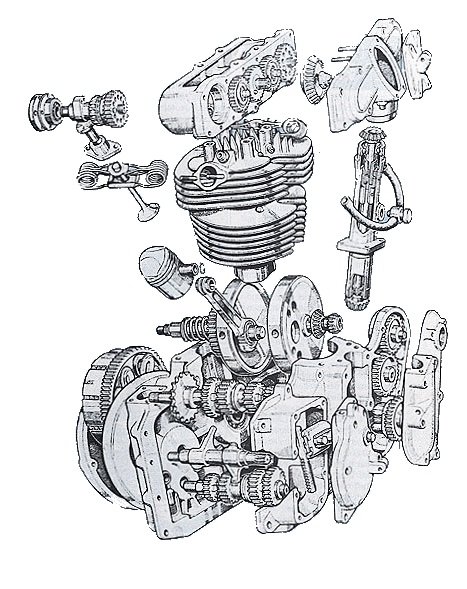
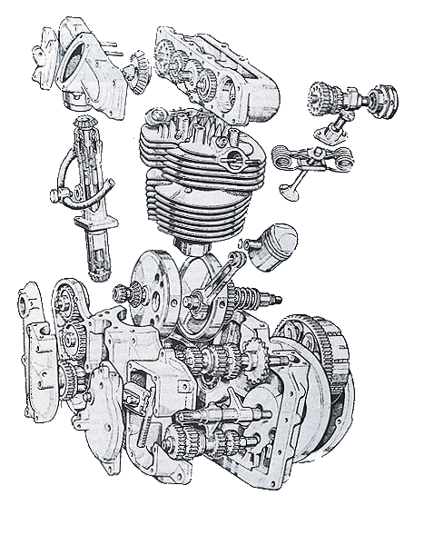

- Centrifugal with clutch plates.
- Centrifugal with clutch shoes
- Centrifugal drive and driven clutches with a belt connecting them. (Snowmobile Type)
- Fluid Torque converter
Centrifugal with Clutch Plates
 This type has clutch plates and usually goes with a transmission. Weights press the steel and fiber plates together engaging the clutch as the engine speed rises. Weak springs disengage the clutch as engine speed drops. Honda 50, 70 and 90cc engines and others, use this type of clutch. These Hondas use a lever on the end of the shifter shaft to completely disengage the clutch to shift gears.
This type has clutch plates and usually goes with a transmission. Weights press the steel and fiber plates together engaging the clutch as the engine speed rises. Weak springs disengage the clutch as engine speed drops. Honda 50, 70 and 90cc engines and others, use this type of clutch. These Hondas use a lever on the end of the shifter shaft to completely disengage the clutch to shift gears.
Centrifugal with Clutch Shoes
 This type has clutch shoes. The shoes are held in with springs. As the engine speed rises, the shoes press against the clutch housing, and engages the clutch. These are used a lot on 4 wheel ATVs along with a regular clutch and transmission. Go carts and those little, big wheeled, mini-bikes with Briggs & Stratton engines also use this type of clutch.
This type has clutch shoes. The shoes are held in with springs. As the engine speed rises, the shoes press against the clutch housing, and engages the clutch. These are used a lot on 4 wheel ATVs along with a regular clutch and transmission. Go carts and those little, big wheeled, mini-bikes with Briggs & Stratton engines also use this type of clutch.
Centrifugal Drive and Driven Belt Clutch
This type has a drive clutch and a driven clutch that are connected by a big thick belt. The sides of the drive clutch (mounted on the engine crankshaft) are pressed together with weights as the engine speed goes up. This makes the belt climb the sides effectively making the front pulley bigger. The driven clutch (Mounted on what ends up being the countershaft sprocket) has a weak spring that pushes the pulley sides together. As the front pulley gets bigger the belt pushes against the rear pulley, overcoming the spring, and making the rear pulley smaller. What all this means is that you have a infinitely variable transmission with this type of automatic clutch. This type is used on Honda Odyssey 4 wheelers and lots and lots of snowmobiles. It is also used on some mini-bikes, go-carts, and on Rokon two wheel drive dirt bikes. The old Rokon 340cc motorcycles used it too.
Fluid Torque Converters
Honda had a 750cc and a 400cc, Suzuki had a 450cc, and Moto Guzzi had a 1000cc automatic. Most were made in the late 70's, early 80's and had a 2-speed gear box with a Fluid Torque Converter that worked just like a car. You don't see too many of these bikes nowadays, and on most, the Torque Converter was a sealed unit, requiring no service.
Repair
Repair on all of these is pretty simple. If the plates, shoes or belts are badly worn replace them.
For some Automatic Clutch Exploded views to study Click Here

 |
 |
Copyright © 1999-2000 dansmc.com. All rights reserved.